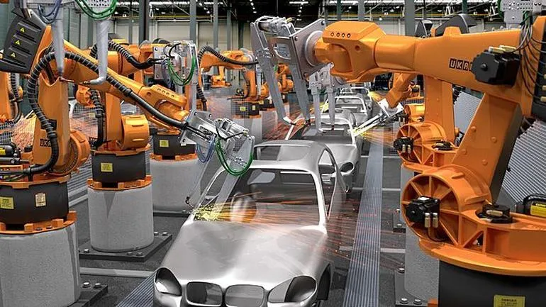

What are Industry Robots?
Industrial Robots are robotts that are used for manufacturing goods, such as cars and parts of vehicles. These robots are automatic and easily programmable (AKA flexible) which makes them not have to fixated to one task. The main tasks they carry out are ones that can often lead to human injury. Such as welding. The machines don't need any sort of safety equipmentb that a human would need and can do it much more effeciently than a person. If you would like to learn more about Industrial robots and how they are being used in modern times, click the link below or watch the attach informational video

source 1 (above) shows multiple Industrial robots putting together a car incredibly efficiently.
Industrial Robots